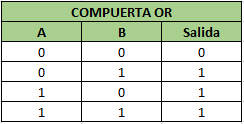
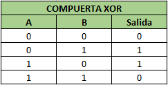
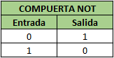

HALF ADDER (Medio sumador)




👉 XOR - exclusive OR ( una salida verdadera resulta si una, y solo una de las entradas a la puerta es verdadera. Si ambas entradas son falsas o ambas son verdaderas, resulta en una salida falsa)
👉 NOT (es la negacion de lo que tengo)
HALF ADDER (Medio sumador)
El Half-Adder es un bloque de construcción básico para sumar dos números como dos entradas y producir dos salidas. El sumador se utiliza para realizar la operación OR de dos números binarios de un solo bit. Los bits de **sumador** y **sumador** son dos estados de entrada, y **'carry** ' y **'sum** ' son dos estados de salida del medio sumador.
A ---->┌────────────┐----> Suma │ HALF ADDER │ B ---->└────────────┘----> AcarreoPASAR DE DECIMAL A BINARIO
Si quisiéramos sumar 19+24 sabemos que la suma de 9+4 = 13, por lo tanto en el resultado final en la unidad nos queda un 3 y debemos “llevarnos†la decena. Luego, para la decena debemos sumar 1 + 2 + 1 = 4. Obteniendo como resultado final 43.
En el Half Adder, ese rol de acarreo lo hace la puerta lógica AND (dice si hay acarreo) mientras que el XOR efectúa la suma.
<<<<<= se suma de Derecha a Izquierda 19 ---> 110011 24 ---> 11000 --------------- 43 ---> 101011 │││││└─> 1 AND 0 = 1(no hay acarreo); 1 XOR 0 = 1 ││││└──> 1 AND 0 = 1(no hay acarreo); 1 XOR 0 = 1 │││└───> 0 AND 0 = 0(no hay acarreo); 0 XOR 0 = 0 ││└────> 0 AND 1 = 0(no hay acarreo); 0 XOR 1 = 1 │└─────> 1 AND 1 = 1(hay acarreo); 1 XOR 1 = 0 └──────> Se agrega 0 y 1 AND 0 = 1PASAR DE BINARIO A DECIMAL
1 Byte ---> 8 posiciones ---> 8 bit 0 0 1 0 1 0 1 1 7 6 5 4 3 2 1 0  Sumatoria ( 2^pos * valor) de Derecha a Izquierda  2^0*1 + 2^1*1 + 2^2*0 + 2^3*1 + 2^4*0 + 2^5*1  1*1  +  2*1  +  4*0  +  8*1  +  16*0 +  32*1  1  +  2  +  0  +  8  +  0  +  32  43  __  1  +  1 +  1 +  1 + 1 + 1 + 1 + 1  128 + 64 + 32 + 16 + 8 + 4 + 2 + 1  ==> 255 caracteres representables ASSCI  7  +  6 +  5 +  4 + 3 + 2 + 1 + 0  *  Estado Fisico-------->  OFF  ON  ON  OFF  OFF  ON  ON  OFF *  Notacion Binaria----->  0  1  1  0  0  1  1  0 *  Orden de Magnitud---->  2^7  2^6  2^5  2^4  2^3  2^2  2^1 2^0 *  Valor Decimal--------->  128  64  32  16  8  4  2  1 *  Valor Aplicable-------->  0  64  32  0  0  4  2  0 *  Total Valor Decimal--->  102 = 64 + 32 + 4 + 2  *************************************  ************  UNICODE  ************  *************************************| Nro de bytes | Bytes 1 | Bytes 2 | Bytes 3 | Bytes 4 |
|---|---|---|---|---|
| 1 | 0XXXXXXX | |||
| 2 | 110XXXXX | 10XXXXXX | 10XXXXXX | |
| 3 | 1110XXXX | 10XXXXXX | 10XXXXXX | |
| 4 | 11110XXX | 10XXXXXX | 10XXXXXX | 10XXXXXX |